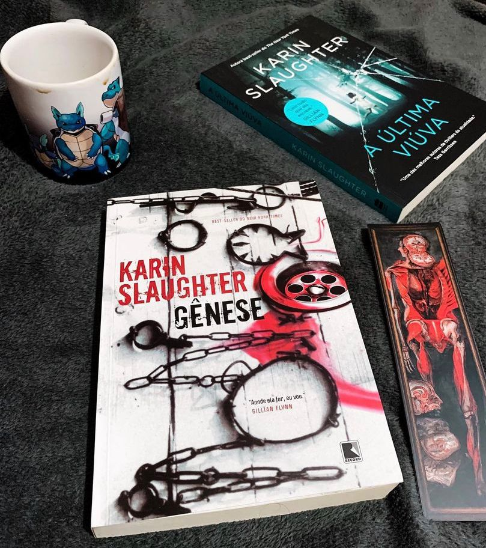

Gênese
(Karin Slaughter - Record)
⭐⭐⭐⭐⭐
⚠️Gatilhos: Abuso sexual, sequestro, violência física e psicológica .
Quando uma paciente chega à emergência do hospital Grady gravemente ferida, a médica Sara Linton se depara com um mundo de violência e terror. A mulher foi atropelada por um carro, mas, completamente nua, com marcas de tortura pelo corpo, ela parece ter sido vítima de uma mente muito perturbada.
A polícia começa a investigação, porém o detetive Will Trent não se dá por satisfeito. Ele logo descobre uma câmara subterrânea que esconde uma revelação macabra: a mulher que deu entrada no hospital não foi a única vítima desse sádico.
Com a ajuda da Dra. Linton, Will e a sua parceira, Faith Mitchell, mergulham na caça ao assassino. Quando outra mulher desaparece sem deixar vestígios, a verdade os atinge como um golpe brutal: o esconderijo do assassino foi descoberto, mas ele continua em ação. Agora os três são o único obstáculo entre um louco e sua próxima vítima.
Hoje venho trazer mais um thriller eletreziante, daqueles de tirar o fôlego de qualquer um ! Gênese é pesado, brutal e por isso se você é sensível a temas como sequestro, violência extrema e abuso sexual é melhor passar longe.
Karin Slaughter é uma autora bem descritiva quanto a detalhes, a narrativa em terceira pessoa ajuda no desenvolvimento da trama e tudo é muito bem explicado, talvez esse conjunto de elementos faça com que a autora consiga passar tanta veracidade nos seus livros.
Gostei muito de conhecer o início da história de Will Trent e Sara Linton, personagens que a autora tem toda uma coleção de livros e a cada livro um novo caso. Indico para todos os fãs de thrillers que gostam de histórias que vão te deixar paralisado!